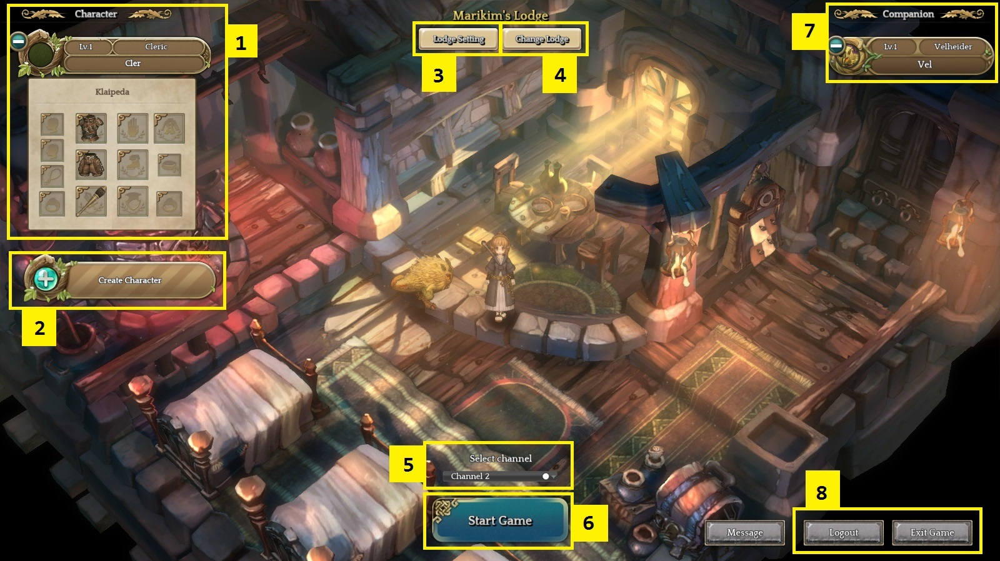
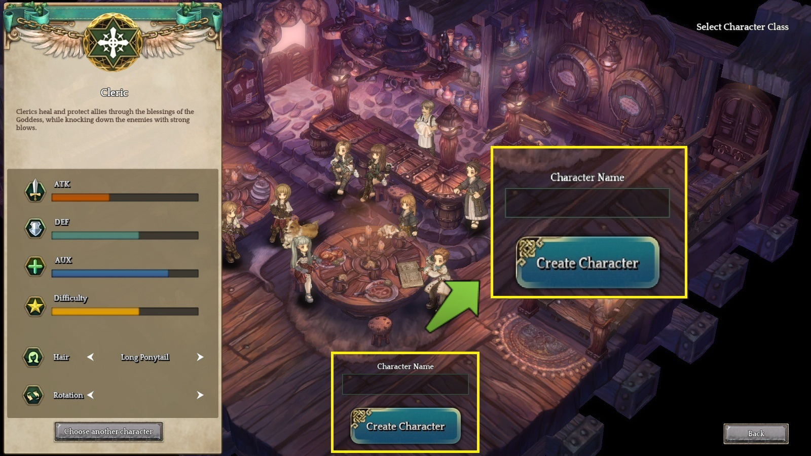

Passo 1. Começando o Jogo
Lodge I Você pode checar as opções do Lodge e informações de seus personagens e companheiros.

O Lodge é o primeiro lugar que você entra quando começa o jogo. É aqui que você cria novos personagens, troca o nome do Lodge, seleciona companheiros e escolhe o canal.
Criar Personagem: você pode criar seu próprio personagem.

Quando entrar no jogo, você pode criar personagens clicando no [Create Character] -> [Enter Character Name] -> [Create]